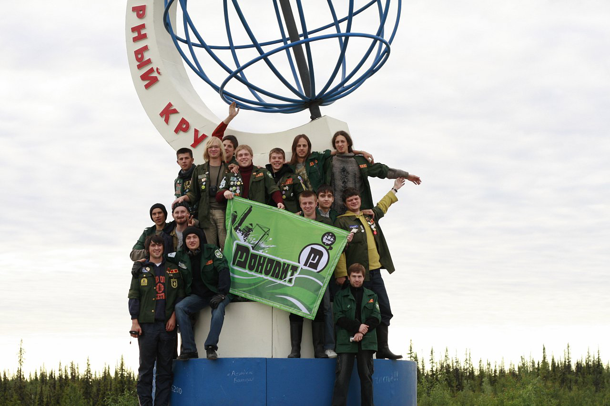

МоноИнфа

Монолит по дороге на свой первый сезон, 2010 г.
Студенческий строительный отряд — это сплочённый дружеский коллектив юношей и девушек,
выполняющих ремонтно-строительные работы на объектах в летний период.
"Монолит" — ССО штаба ЛЭТИ, выезжающий в самые отдалённые уголки России и объединяющий в себе лучших людей!
Здесь ты
- получишь опыт трудоустройства и общения с работодателем в безопасной дружеской среде;
- найдёшь лучших друзей, близких по духу людей и поддержку на года;
- сможешь накопить на свою мечту/финансово помочь родителям/просто пожить красиво, забыв о подработках, ведь твоя заработная плата за сезон вряд ли будет меньше 130к;
- испытаешь себя и раскроешь свой потенциал;
- побываешь в самых отдалённых местахнашей страны;
- получишь бесценный опыт работы на строительных площадках и неплохо прокачаешь свои навыки;
- подкачаешься и похудеешь за лето;
- испытаешь весь спектр эмоций и поймёшь, что студенчество — это не только про учёбу!
Отлично! А что нужно от меня?
- тебе должно быть 18 лет на начало июля;
- ты — студент питерского вуза;
- тебя беспокоят вопросы трудоустройства и взрослой жизни;
- ты устал за учебный год, хочешь круто проводить время с такими же, как и ты, молодыми и амбициозными ребятами, и
- Всё про тебя? Тогда освобождай июль с августом и погнали навстречу приключениям!
История отряда